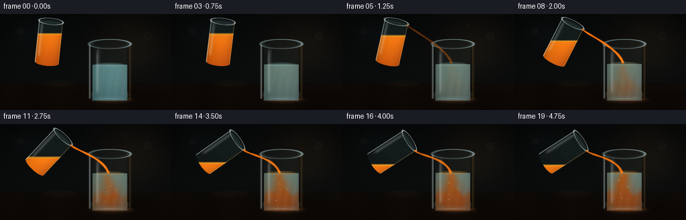
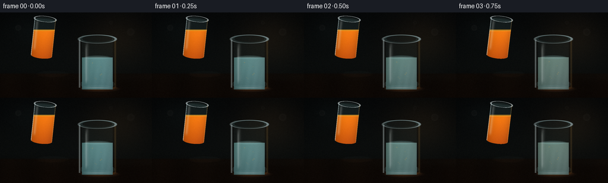

CODING AGENTS AS PIXEL WORLD MODELS
traex/DeepSeek-V4.1-Flash · material_0020
点击播放 · 原生 RGB 像素
逐轮保存的候选
回放视频、检查图与代码变化。
每份候选均可单独播放。实际图片检查记录在下方工具轨迹中。
候选 01播放与检查图
点击播放 · 原生 RGB 像素

展开代码变化
--- 上一保存版本
+++ 本次保存版本
@@ -0,0 +1,368 @@
+from pathlib import Path
+
+import numpy as np
+from PIL import Image, ImageFilter
+
+import artifact_io
+
+
+W, H = 256, 144
+N, FPS = 20, 4.0
+SS = 3
+ROOT = Path(__file__).resolve().parent
+
+
+def smoothstep(edge0, edge1, value):
+ t = np.clip((value - edge0) / (edge1 - edge0), 0.0, 1.0)
+ return t * t * (3.0 - 2.0 * t)
+
+
+def mix(a, b, t):
+ return a + (b - a) * t
+
+
+def soft_ellipse(x, y, cx, cy, rx, ry, feather=1.0):
+ d = np.sqrt(((x - cx) / rx) ** 2 + ((y - cy) / ry) ** 2)
+ return 1.0 - smoothstep(1.0 - feather / min(rx, ry), 1.0, d)
+
+
+def over(base, color, alpha):
+ a = np.clip(alpha, 0.0, 1.0)[..., None]
+ return base * (1.0 - a) + np.asarray(color, dtype=np.float32) * a
+
+
+def gaussian_blur_channel(channel, radius):
+ image = Image.fromarray(np.uint8(np.clip(channel, 0.0, 1.0) * 255.0), "L")
+ return np.asarray(image.filter(ImageFilter.GaussianBlur(radius)), dtype=np.float32) / 255.0
+
+
+def background(x, y, t):
+ yy = y / H
+ xx = x / W
+ top = np.array([0.055, 0.075, 0.090], dtype=np.float32)
+ mid = np.array([0.095, 0.125, 0.135], dtype=np.float32)
+ low = np.array([0.055, 0.062, 0.058], dtype=np.float32)
+ bg = np.empty((H * SS, W * SS, 3), dtype=np.float32)
+ for c in range(3):
+ bg[..., c] = np.where(
+ yy < 0.63,
+ mix(top[c], mid[c], smoothstep(0.02, 0.63, yy)),
+ mix(mid[c], low[c], smoothstep(0.63, 0.88, yy)),
+ )
+
+ # A warm, softly defocused window behind the glasses.
+ glow = np.exp(-(((x - 0.78 * W) / 52.0) ** 2 + ((y - 0.30 * H) / 43.0) ** 2))
+ bg += glow[..., None] * np.array([0.14, 0.095, 0.050], dtype=np.float32)
+ glow2 = np.exp(-(((x - 0.20 * W) / 38.0) ** 2 + ((y - 0.20 * H) / 24.0) ** 2))
+ bg += glow2[..., None] * np.array([0.035, 0.055, 0.060], dtype=np.float32)
+
+ # Very restrained bokeh gives depth without distracting from the pour.
+ for bx, by, br, strength in [
+ (0.12, 0.18, 5.8, 0.070),
+ (0.86, 0.23, 7.2, 0.055),
+ (0.73, 0.12, 3.8, 0.040),
+ (0.29, 0.31, 3.2, 0.032),
+ ]:
+ disc = 1.0 - smoothstep(br * 0.72, br, np.sqrt((x - bx * W) ** 2 + (y - by * H) ** 2))
+ ring = np.clip(disc - (1.0 - smoothstep(br * 0.38, br * 0.72, np.sqrt((x - bx * W) ** 2 + (y - by * H) ** 2))), 0, 1)
+ bg += (0.55 * disc + 0.45 * ring)[..., None] * strength
+
+ # Counter plane with a quiet reflected sheen.
+ counter_top = 104.0
+ c = smoothstep(counter_top - 2.5, counter_top + 1.0, y)
+ wood = np.empty_like(bg)
+ grain = 0.5 + 0.5 * np.sin(x * 0.083 + 0.8 * np.sin(x * 0.017))
+ wood[..., 0] = 0.105 + 0.030 * grain + 0.010 * smoothstep(105, 144, y)
+ wood[..., 1] = 0.072 + 0.018 * grain
+ wood[..., 2] = 0.050 + 0.010 * grain
+ bg = bg * (1.0 - c[..., None]) + wood * c[..., None]
+ sheen = np.exp(-((y - 108.0) / 7.0) ** 2) * (0.25 + 0.75 * smoothstep(0, 256, x))
+ bg += sheen[..., None] * np.array([0.025, 0.030, 0.030], dtype=np.float32)
+ return bg
+
+
+def add_shadow(img, x, y, cx, cy, rx, ry, strength=0.4):
+ shadow = 1.0 - soft_ellipse(x, y, cx, cy, rx, ry, 1.7)
+ return img * (1.0 - strength * shadow[..., None])
+
+
+def receiver_glass(img, x, y, t, juice):
+ cx, rim_y, bottom_y = 164.0, 45.0, 128.0
+ rx, inner_rx, rim_ry = 31.0, 26.0, 7.0
+ level = 76.0 - 3.0 * smoothstep(0.0, 1.0, t)
+
+ # Contact shadow and tabletop caustic.
+ img = add_shadow(img, x, y, cx + 4, 129, 38, 6, 0.50)
+ caustic = soft_ellipse(x, y, cx + 3, 128, 34, 4.0, 1.4)
+ img += caustic[..., None] * np.array([0.18, 0.105, 0.040], dtype=np.float32)
+
+ inside_x = np.abs(x - cx) < inner_rx
+ body = inside_x & (y >= rim_y - rim_ry) & (y <= bottom_y + 2)
+ lower_ellipse = ((x - cx) / (rx - 1.0)) ** 2 + ((y - (bottom_y - 7.0)) / 8.0) ** 2 <= 1.0
+ body |= lower_ellipse & (y <= bottom_y)
+ body_soft = body.astype(np.float32)
+
+ # The rear wall is a cool transparent skin.
+ back = body_soft * (0.055 + 0.05 * smoothstep(rim_y, bottom_y, y))
+ img = over(img, (0.35, 0.57, 0.61), back * 0.52)
+
+ # Liquid volume: pale water that acquires orange juice from the stream.
+ liq = body & (y >= level) & (np.abs(x - cx) < inner_rx + 0.5)
+ bottom_cap = ((x - cx) / (inner_rx - 1.5)) ** 2 + ((y - (bottom_y - 7.0)) / 7.0) ** 2 <= 1.0
+ liq |= bottom_cap & (y <= bottom_y) & (y >= level)
+ liquid_depth = np.clip((y - level) / (bottom_y - level), 0.0, 1.0)
+ horiz = np.clip((x - (cx - inner_rx)) / (2.0 * inner_rx), 0.0, 1.0)
+ water = np.empty((H * SS, W * SS, 3), dtype=np.float32)
+ water[..., 0] = 0.43 + 0.09 * horiz - 0.10 * liquid_depth
+ water[..., 1] = 0.68 + 0.08 * horiz - 0.12 * liquid_depth
+ water[..., 2] = 0.69 + 0.09 * horiz - 0.10 * liquid_depth
+
+ # A descending, wobbling orange plume, followed by a spreading mixed layer.
+ pour = np.clip((t - 0.18) / 0.78, 0.0, 1.0)
+ depth = np.maximum(y - level, 0.0)
+ plume_center = cx + 1.6 * np.sin(depth * 0.16 + t * 7.0) + 2.8 * np.sin(depth * 0.055 - t * 2.5)
+ plume_radius = 2.7 + 0.105 * depth + 2.4 * pour
+ plume = np.exp(-0.5 * ((x - plume_center) / plume_radius) ** 2) * np.exp(-depth / 50.0)
+ plume *= smoothstep(0.0, 4.0, depth) * pour
+
+ # Broad rolling clouds make the juice read as mixing, not paint.
+ swirl = np.zeros_like(x)
+ for amp, sx, sy, px, py, spread in [
+ (0.50, 15.0, 12.0, cx - 4.0, level + 23.0, 1.2),
+ (0.42, 17.0, 13.0, cx + 7.0, level + 34.0, 1.7),
+ (0.32, 19.0, 11.0, cx - 7.0, level + 45.0, 2.4),
+ ]:
+ cxp = px + 4.0 * np.sin(t * (2.2 + spread) + py * 0.08)
+ cyp = py + 2.0 * np.cos(t * (1.8 + spread) + px * 0.05)
+ swirl += amp * np.exp(-0.5 * (((x - cxp) / sx) ** 2 + ((y - cyp) / sy) ** 2))
+ swirl *= smoothstep(0.12, 0.75, t)
+
+ # Denser juice gathers near the bottom with a wavy boundary.
+ bottom_boundary = level + 31.0 + 3.4 * np.sin((x - cx) * 0.27 + t * 4.2)
+ settled = smoothstep(bottom_boundary - 7.0, bottom_boundary + 6.0, y) * smoothstep(0.16, 0.82, t)
+ settled *= 0.82
+ juice_amount = np.clip(0.14 + 0.80 * plume + 0.48 * swirl + 0.56 * settled, 0.0, 0.94)
+ juice_amount *= smoothstep(0.02, 0.17, t)
+ juice_color = np.empty_like(water)
+ juice_color[..., 0] = 0.94 - 0.17 * liquid_depth
+ juice_color[..., 1] = 0.43 - 0.12 * liquid_depth
+ juice_color[..., 2] = 0.055 + 0.025 * horiz
+ liquid_rgb = mix(water, juice_color, juice_amount[..., None])
+
+ # Volume shading, refraction bands, and a bright surface.
+ edge = np.abs(x - cx) / inner_rx
+ liquid_rgb *= (0.79 + 0.25 * np.sqrt(np.clip(1.0 - edge**2, 0, 1)))[..., None]
+ bands = 0.5 + 0.5 * np.sin((x - cx) * 0.55 + y * 0.08 + t * 1.7)
+ liquid_rgb += (bands * 0.025 * smoothstep(0.0, 0.5, liquid_depth))[..., None]
+ liquid_alpha = liq.astype(np.float32) * (0.90 + 0.04 * horiz)
+ img = over(img, (0.0, 0.0, 0.0), liquid_alpha * 0.0)
+ a = np.clip(liquid_alpha, 0, 1)[..., None]
+ img = img * (1.0 - a) + liquid_rgb * a
+
+ # Meniscus surface: a thin luminous ellipse at the liquid line.
+ surf = soft_ellipse(x, y, cx, level, inner_rx - 0.5, 3.7, 1.3) * (y <= level + 3.4)
+ surf_color = mix(np.array([0.58, 0.82, 0.84]), np.array([1.00, 0.58, 0.14]), min(1.0, juice))
+ img = over(img, surf_color, surf * 0.34)
+ surf_line = soft_ellipse(x, y, cx, level, inner_rx - 1.0, 0.85, 1.0)
+ img = over(img, (0.90, 0.97, 0.92), surf_line * 0.40)
+
+ # Bubbles in the receiving liquid and tiny bubbles in the entry column.
+ bubbles = np.zeros_like(x)
+ for k in range(9):
+ phase = (t * (0.15 + 0.035 * k) + k * 0.173) % 1.0
+ by = bottom_y - 9.0 - phase * (bottom_y - level - 13.0)
+ bx = cx + np.sin(k * 2.1 + phase * 8.0) * (4.0 + 2.2 * (k % 3))
+ br = 0.65 + 0.35 * (k % 3)
+ bubbles = np.maximum(bubbles, soft_ellipse(x, y, bx, by, br, br, 0.8))
+ img = over(img, (1.0, 0.79, 0.42), bubbles * (0.25 + 0.35 * pour))
+
+ # Clear front wall, side edges, elliptical rim, and base.
+ wall = body_soft * (0.10 + 0.07 * smoothstep(rim_y, bottom_y, y))
+ img = over(img, (0.60, 0.83, 0.88), wall * 0.34)
+ left_edge = np.exp(-((x - (cx - rx + 1.0)) / 1.25) ** 2) * (y > rim_y + 1) * (y < bottom_y - 1)
+ right_edge = np.exp(-((x - (cx + rx - 1.0)) / 1.45) ** 2) * (y > rim_y + 1) * (y < bottom_y - 1)
+ img = over(img, (0.88, 0.97, 1.0), left_edge * 0.52)
+ img = over(img, (1.0, 0.78, 0.43), right_edge * 0.18)
+ long_glint = np.exp(-((x - (cx - 17.5)) / 2.6) ** 2) * smoothstep(rim_y + 3, rim_y + 12, y) * (1.0 - smoothstep(111, 121, y))
+ img = over(img, (0.92, 0.98, 1.0), long_glint * 0.18)
+
+ rim_outer = np.abs(np.sqrt(((x - cx) / rx) ** 2 + ((y - rim_y) / rim_ry) ** 2) - 1.0)
+ rim = (1.0 - smoothstep(0.035, 0.10, rim_outer)) * (y < rim_y + rim_ry + 1)
+ angle = np.arctan2((y - rim_y) / rim_ry, (x - cx) / rx)
+ rim_light = 0.38 + 0.34 * (0.5 + 0.5 * np.cos(angle + 0.7))
+ img = over(img, (0.82, 0.96, 1.0), rim * rim_light)
+ rim_inner = (1.0 - smoothstep(0.02, 0.08, np.abs(np.sqrt(((x - cx) / (rx - 4)) ** 2 + ((y - rim_y + 0.5) / (rim_ry - 1.1)) ** 2) - 1.0)))
+ img = over(img, (0.35, 0.55, 0.58), rim_inner * 0.30)
+
+ base = soft_ellipse(x, y, cx, bottom_y - 2.0, rx - 2.0, 4.0, 1.1)
+ base_line = soft_ellipse(x, y, cx, bottom_y - 1.0, rx - 3.0, 1.1, 0.9)
+ img = over(img, (0.58, 0.83, 0.87), base * 0.12)
+ img = over(img, (0.92, 0.98, 1.0), base_line * 0.34)
+ return img
+
+
+def source_glass(img, x, y, t):
+ cx, cy = 73.0, 42.0
+ half_h, half_w = 31.0, 18.0
+ pour = smoothstep(0.10, 0.83, t)
+ theta = np.deg2rad(mix(6.0, 57.0, pour))
+ ct, st = np.cos(theta), np.sin(theta)
+ dx, dy = x - cx, y - cy
+ u = dx * st - dy * ct
+ v = dx * ct + dy * st
+ body = (np.abs(v) <= half_w) & (u >= -half_h) & (u <= half_h)
+ bottom_round = ((u + half_h) / 5.0) ** 2 + (v / half_w) ** 2 <= 1.0
+ body |= bottom_round & (u < -half_h + 1)
+ body_soft = body.astype(np.float32)
+
+ # Cast shadow beneath the raised source glass.
+ img = add_shadow(img, x, y, cx + 16, 104, 31, 6, 0.25)
+
+ # Transparent body and rear rim.
+ glass_tint = 0.08 + 0.04 * smoothstep(-half_h, half_h, u)
+ img = over(img, (0.40, 0.60, 0.64), body_soft * glass_tint)
+
+ # Juice remains horizontal as the glass tips, and its surface falls.
+ surface_y = mix(cy - 12.0, cy + 20.0, smoothstep(0.12, 0.90, t))
+ liquid = body & (y > surface_y)
+ liquid_depth = np.clip((y - surface_y) / (half_h * 1.7), 0.0, 1.0)
+ across = np.clip((v + half_w) / (2.0 * half_w), 0.0, 1.0)
+ jr = np.empty((H * SS, W * SS, 3), dtype=np.float32)
+ jr[..., 0] = 0.98 - 0.24 * liquid_depth
+ jr[..., 1] = 0.47 - 0.18 * liquid_depth
+ jr[..., 2] = 0.035 + 0.035 * across
+ jr *= (0.82 + 0.25 * np.sqrt(np.clip(1.0 - (v / half_w) ** 2, 0, 1)))[..., None]
+ img = over(img, (0, 0, 0), liquid.astype(np.float32) * 0.0)
+ a = liquid.astype(np.float32) * 0.93
+ img = img * (1.0 - a[..., None]) + jr * a[..., None]
+
+ # Horizontal juice surface clipped to the tilted glass.
+ surface = body & (np.abs(y - surface_y) < 1.4)
+ img = over(img, (1.0, 0.69, 0.17), surface.astype(np.float32) * 0.55)
+
+ # Rounded rim, glass edges, and a crisp moving highlight.
+ rim_local = ((u - half_h) / 4.8) ** 2 + (v / (half_w + 0.2)) ** 2
+ rim = (np.abs(np.sqrt(np.maximum(rim_local, 0.0)) - 1.0) < 0.075) & (u > half_h - 5.0)
+ img = over(img, (0.91, 0.98, 1.0), rim.astype(np.float32) * 0.58)
+ rim_inner = ((u - half_h + 0.7) / 3.8) ** 2 + (v / (half_w - 2.0)) ** 2 < 1.0
+ rim_inner &= u > half_h - 4.0
+ img = over(img, (0.36, 0.52, 0.54), rim_inner.astype(np.float32) * 0.18)
+
+ side_l = (np.abs(v + half_w) < 1.2) & body
+ side_r = (np.abs(v - half_w) < 1.2) & body
+ img = over(img, (0.88, 0.98, 1.0), side_l.astype(np.float32) * 0.48)
+ img = over(img, (1.0, 0.79, 0.45), side_r.astype(np.float32) * 0.22)
+ glint = np.exp(-((v + half_w - 5.0) / 2.2) ** 2) * body
+ glint *= smoothstep(-half_h + 5, -half_h + 14, u) * (1.0 - smoothstep(half_h - 8, half_h, u))
+ img = over(img, (0.98, 1.0, 1.0), glint * 0.20)
+
+ lip_u, lip_v = half_h - 0.4, half_w - 1.5
+ lip_x = cx + lip_u * st + lip_v * ct
+ lip_y = cy - lip_u * ct + lip_v * st
+ return img, lip_x, lip_y, pour
+
+
+def bezier(p0, p1, p2, p3, s):
+ om = 1.0 - s
+ return om**3 * p0 + 3.0 * om**2 * s * p1 + 3.0 * om * s**2 * p2 + s**3 * p3
+
+
+def add_stream(img, x, y, start_x, start_y, t, pour):
+ if pour < 0.03:
+ return img
+ strength = smoothstep(0.03, 0.30, pour) * (1.0 - 0.16 * smoothstep(0.88, 1.0, pour))
+ end_x = 161.0 + 0.9 * np.sin(t * 4.0)
+ end_y = 73.0
+ p0 = np.array([start_x, start_y + 1.0])
+ p1 = np.array([start_x + 8.0, start_y + 9.0])
+ p2 = np.array([end_x - 8.0, end_y - 23.0])
+ p3 = np.array([end_x, end_y])
+ s = np.linspace(0.0, 1.0, 260)
+ bx = bezier(p0[0], p1[0], p2[0], p3[0], s)
+ by = bezier(p0[1], p1[1], p2[1], p3[1], s)
+ width = 1.55 + 0.75 * s + 0.18 * np.sin(s * 19.0 + t * 9.0)
+ mask = np.zeros_like(x)
+ core = np.zeros_like(x)
+ highlight = np.zeros_like(x)
+ for i in range(0, len(s), 2):
+ w = width[i]
+ m = soft_ellipse(x, y, bx[i], by[i], w, w, 0.85)
+ mask = np.maximum(mask, m)
+ c = soft_ellipse(x, y, bx[i], by[i], max(0.65, w * 0.48), max(0.65, w * 0.48), 0.8)
+ core = np.maximum(core, c)
+ h = soft_ellipse(x, y, bx[i] - w * 0.32, by[i] - 0.2, max(0.35, w * 0.24), max(0.35, w * 0.24), 0.8)
+ highlight = np.maximum(highlight, h)
+ img = over(img, (0.96, 0.38, 0.025), mask * strength * 0.90)
+ img = over(img, (1.00, 0.63, 0.10), core * strength * 0.58)
+ img = over(img, (1.00, 0.92, 0.55), highlight * strength * 0.46)
+
+ # A small meniscus where the stream enters the water.
+ splash = soft_ellipse(x, y, end_x, end_y - 1.0, 5.2, 1.4, 1.2)
+ img = over(img, (1.0, 0.66, 0.17), splash * strength * 0.38)
+ return img
+
+
+def droplets(img, x, y, start_x, start_y, t, pour):
+ if pour < 0.03:
+ return img
+ end_x, end_y = 161.0, 73.0
+ for k in range(5):
+ phase = (t * (0.75 + 0.08 * k) + k * 0.19) % 1.0
+ p = np.array([start_x, start_y])
+ q = np.array([start_x + 9.0, start_y + 9.0])
+ r = np.array([end_x - 10.0, end_y - 26.0])
+ z = np.array([end_x + 1.5 * np.sin(k * 2.2), end_y])
+ px = bezier(p[0], q[0], r[0], z[0], phase)
+ py = bezier(p[1], q[1], r[1], z[1], phase)
+ radius = 0.55 + 0.25 * (k % 2)
+ dot = soft_ellipse(x, y, px, py, radius, radius, 0.9)
+ img = over(img, (1.0, 0.72, 0.20), dot * pour * 0.60)
+ return img
+
+
+def render_frame(index):
+ t = index / (N - 1)
+ yy, xx = np.mgrid[0 : H * SS, 0 : W * SS].astype(np.float32)
+ x = (xx + 0.5) / SS
+ y = (yy + 0.5) / SS
+ img = background(x, y, t)
+
+ # Faint long reflections on the countertop.
+ reflection = np.exp(-((x - 164.0) / 30.0) ** 2) * smoothstep(112.0, 132.0, y) * (1.0 - smoothstep(137.0, 144.0, y))
+ img += reflection[..., None] * np.array([0.025, 0.018, 0.012], dtype=np.float32)
+
+ img = receiver_glass(img, x, y, t, smoothstep(0.10, 0.88, t))
+ img, sx, sy, pour = source_glass(img, x, y, t)
+ img = add_stream(img, x, y, sx, sy, t, pour)
+ img = droplets(img, x, y, sx, sy, t, pour)
+
+ # Fine glass-front glints after the liquid and stream.
+ front_glint = np.exp(-((x - 145.0) / 1.3) ** 2) * smoothstep(52, 65, y) * (1.0 - smoothstep(114, 124, y))
+ img = over(img, (0.96, 1.0, 1.0), front_glint * 0.17)
+
+ # Gentle bloom around warm highlights.
+ lum = np.maximum(img[..., 0] - 0.62, 0.0)
+ bloom = gaussian_blur_channel(lum, 3.6)
+ img += bloom[..., None] * np.array([0.16, 0.10, 0.045], dtype=np.float32)
+
+ # Color grade, vignette, and subtle grain.
+ img = np.power(np.clip(img, 0.0, 1.0), np.array([0.96, 0.98, 1.02], dtype=np.float32))
+ vignette = 1.0 - 0.28 * (((x - W / 2) / (W * 0.72)) ** 2 + ((y - H / 2) / (H * 0.78)) ** 2)
+ img *= np.clip(vignette, 0.62, 1.0)[..., None]
+ rng = np.random.default_rng(20261111 + index)
+ grain = rng.normal(0.0, 0.010, (H * SS, W * SS, 1)).astype(np.float32)
+ img = np.clip(img + grain, 0.0, 1.0)
+
+ image = Image.fromarray(np.uint8(img * 255.0 + 0.5), "RGB")
+ image = image.resize((W, H), Image.Resampling.LANCZOS)
+ return np.asarray(image, dtype=np.uint8)
+
+
+def main():
+ frames = np.stack([render_frame(i) for i in range(N)])
+ artifact_io.save(frames, ROOT)
+ print(f"wrote {len(frames)} frames to {ROOT}")
+
+
+if __name__ == "__main__":
+ main()
候选 02播放与检查图
点击播放 · 原生 RGB 像素


展开代码变化
--- 上一保存版本
+++ 本次保存版本
@@ -39,9 +39,9 @@
def background(x, y, t):
yy = y / H
xx = x / W
- top = np.array([0.055, 0.075, 0.090], dtype=np.float32)
- mid = np.array([0.095, 0.125, 0.135], dtype=np.float32)
- low = np.array([0.055, 0.062, 0.058], dtype=np.float32)
+ top = np.array([0.105, 0.145, 0.170], dtype=np.float32)
+ mid = np.array([0.185, 0.245, 0.255], dtype=np.float32)
+ low = np.array([0.105, 0.120, 0.112], dtype=np.float32)
bg = np.empty((H * SS, W * SS, 3), dtype=np.float32)
for c in range(3):
bg[..., c] = np.where(
@@ -52,16 +52,16 @@
# A warm, softly defocused window behind the glasses.
glow = np.exp(-(((x - 0.78 * W) / 52.0) ** 2 + ((y - 0.30 * H) / 43.0) ** 2))
- bg += glow[..., None] * np.array([0.14, 0.095, 0.050], dtype=np.float32)
+ bg += glow[..., None] * np.array([0.22, 0.150, 0.075], dtype=np.float32)
glow2 = np.exp(-(((x - 0.20 * W) / 38.0) ** 2 + ((y - 0.20 * H) / 24.0) ** 2))
- bg += glow2[..., None] * np.array([0.035, 0.055, 0.060], dtype=np.float32)
+ bg += glow2[..., None] * np.array([0.060, 0.090, 0.095], dtype=np.float32)
# Very restrained bokeh gives depth without distracting from the pour.
for bx, by, br, strength in [
- (0.12, 0.18, 5.8, 0.070),
- (0.86, 0.23, 7.2, 0.055),
- (0.73, 0.12, 3.8, 0.040),
- (0.29, 0.31, 3.2, 0.032),
+ (0.12, 0.18, 5.8, 0.085),
+ (0.86, 0.23, 7.2, 0.065),
+ (0.73, 0.12, 3.8, 0.050),
+ (0.29, 0.31, 3.2, 0.040),
]:
disc = 1.0 - smoothstep(br * 0.72, br, np.sqrt((x - bx * W) ** 2 + (y - by * H) ** 2))
ring = np.clip(disc - (1.0 - smoothstep(br * 0.38, br * 0.72, np.sqrt((x - bx * W) ** 2 + (y - by * H) ** 2))), 0, 1)
@@ -72,12 +72,12 @@
c = smoothstep(counter_top - 2.5, counter_top + 1.0, y)
wood = np.empty_like(bg)
grain = 0.5 + 0.5 * np.sin(x * 0.083 + 0.8 * np.sin(x * 0.017))
- wood[..., 0] = 0.105 + 0.030 * grain + 0.010 * smoothstep(105, 144, y)
- wood[..., 1] = 0.072 + 0.018 * grain
- wood[..., 2] = 0.050 + 0.010 * grain
+ wood[..., 0] = 0.175 + 0.045 * grain + 0.015 * smoothstep(105, 144, y)
+ wood[..., 1] = 0.125 + 0.030 * grain
+ wood[..., 2] = 0.082 + 0.018 * grain
bg = bg * (1.0 - c[..., None]) + wood * c[..., None]
sheen = np.exp(-((y - 108.0) / 7.0) ** 2) * (0.25 + 0.75 * smoothstep(0, 256, x))
- bg += sheen[..., None] * np.array([0.025, 0.030, 0.030], dtype=np.float32)
+ bg += sheen[..., None] * np.array([0.040, 0.048, 0.047], dtype=np.float32)
return bg
@@ -103,8 +103,8 @@
body_soft = body.astype(np.float32)
# The rear wall is a cool transparent skin.
- back = body_soft * (0.055 + 0.05 * smoothstep(rim_y, bottom_y, y))
- img = over(img, (0.35, 0.57, 0.61), back * 0.52)
+ back = body_soft * (0.10 + 0.07 * smoothstep(rim_y, bottom_y, y))
+ img = over(img, (0.35, 0.57, 0.61), back * 0.62)
# Liquid volume: pale water that acquires orange juice from the stream.
liq = body & (y >= level) & (np.abs(x - cx) < inner_rx + 0.5)
@@ -113,9 +113,9 @@
liquid_depth = np.clip((y - level) / (bottom_y - level), 0.0, 1.0)
horiz = np.clip((x - (cx - inner_rx)) / (2.0 * inner_rx), 0.0, 1.0)
water = np.empty((H * SS, W * SS, 3), dtype=np.float32)
- water[..., 0] = 0.43 + 0.09 * horiz - 0.10 * liquid_depth
- water[..., 1] = 0.68 + 0.08 * horiz - 0.12 * liquid_depth
- water[..., 2] = 0.69 + 0.09 * horiz - 0.10 * liquid_depth
+ water[..., 0] = 0.56 + 0.11 * horiz - 0.13 * liquid_depth
+ water[..., 1] = 0.84 + 0.09 * horiz - 0.16 * liquid_depth
+ water[..., 2] = 0.84 + 0.10 * horiz - 0.13 * liquid_depth
# A descending, wobbling orange plume, followed by a spreading mixed layer.
pour = np.clip((t - 0.18) / 0.78, 0.0, 1.0)
@@ -144,9 +144,9 @@
juice_amount = np.clip(0.14 + 0.80 * plume + 0.48 * swirl + 0.56 * settled, 0.0, 0.94)
juice_amount *= smoothstep(0.02, 0.17, t)
juice_color = np.empty_like(water)
- juice_color[..., 0] = 0.94 - 0.17 * liquid_depth
- juice_color[..., 1] = 0.43 - 0.12 * liquid_depth
- juice_color[..., 2] = 0.055 + 0.025 * horiz
+ juice_color[..., 0] = 1.00 - 0.15 * liquid_depth
+ juice_color[..., 1] = 0.50 - 0.13 * liquid_depth
+ juice_color[..., 2] = 0.045 + 0.025 * horiz
liquid_rgb = mix(water, juice_color, juice_amount[..., None])
# Volume shading, refraction bands, and a bright surface.
@@ -177,11 +177,11 @@
img = over(img, (1.0, 0.79, 0.42), bubbles * (0.25 + 0.35 * pour))
# Clear front wall, side edges, elliptical rim, and base.
- wall = body_soft * (0.10 + 0.07 * smoothstep(rim_y, bottom_y, y))
- img = over(img, (0.60, 0.83, 0.88), wall * 0.34)
+ wall = body_soft * (0.17 + 0.10 * smoothstep(rim_y, bottom_y, y))
+ img = over(img, (0.68, 0.91, 0.94), wall * 0.42)
left_edge = np.exp(-((x - (cx - rx + 1.0)) / 1.25) ** 2) * (y > rim_y + 1) * (y < bottom_y - 1)
right_edge = np.exp(-((x - (cx + rx - 1.0)) / 1.45) ** 2) * (y > rim_y + 1) * (y < bottom_y - 1)
- img = over(img, (0.88, 0.97, 1.0), left_edge * 0.52)
+ img = over(img, (0.93, 1.0, 1.0), left_edge * 0.72)
img = over(img, (1.0, 0.78, 0.43), right_edge * 0.18)
long_glint = np.exp(-((x - (cx - 17.5)) / 2.6) ** 2) * smoothstep(rim_y + 3, rim_y + 12, y) * (1.0 - smoothstep(111, 121, y))
img = over(img, (0.92, 0.98, 1.0), long_glint * 0.18)
@@ -189,7 +189,7 @@
rim_outer = np.abs(np.sqrt(((x - cx) / rx) ** 2 + ((y - rim_y) / rim_ry) ** 2) - 1.0)
rim = (1.0 - smoothstep(0.035, 0.10, rim_outer)) * (y < rim_y + rim_ry + 1)
angle = np.arctan2((y - rim_y) / rim_ry, (x - cx) / rx)
- rim_light = 0.38 + 0.34 * (0.5 + 0.5 * np.cos(angle + 0.7))
+ rim_light = 0.52 + 0.38 * (0.5 + 0.5 * np.cos(angle + 0.7))
img = over(img, (0.82, 0.96, 1.0), rim * rim_light)
rim_inner = (1.0 - smoothstep(0.02, 0.08, np.abs(np.sqrt(((x - cx) / (rx - 4)) ** 2 + ((y - rim_y + 0.5) / (rim_ry - 1.1)) ** 2) - 1.0)))
img = over(img, (0.35, 0.55, 0.58), rim_inner * 0.30)
@@ -228,8 +228,8 @@
liquid_depth = np.clip((y - surface_y) / (half_h * 1.7), 0.0, 1.0)
across = np.clip((v + half_w) / (2.0 * half_w), 0.0, 1.0)
jr = np.empty((H * SS, W * SS, 3), dtype=np.float32)
- jr[..., 0] = 0.98 - 0.24 * liquid_depth
- jr[..., 1] = 0.47 - 0.18 * liquid_depth
+ jr[..., 0] = 1.00 - 0.19 * liquid_depth
+ jr[..., 1] = 0.53 - 0.15 * liquid_depth
jr[..., 2] = 0.035 + 0.035 * across
jr *= (0.82 + 0.25 * np.sqrt(np.clip(1.0 - (v / half_w) ** 2, 0, 1)))[..., None]
img = over(img, (0, 0, 0), liquid.astype(np.float32) * 0.0)
@@ -243,18 +243,18 @@
# Rounded rim, glass edges, and a crisp moving highlight.
rim_local = ((u - half_h) / 4.8) ** 2 + (v / (half_w + 0.2)) ** 2
rim = (np.abs(np.sqrt(np.maximum(rim_local, 0.0)) - 1.0) < 0.075) & (u > half_h - 5.0)
- img = over(img, (0.91, 0.98, 1.0), rim.astype(np.float32) * 0.58)
+ img = over(img, (0.96, 1.0, 1.0), rim.astype(np.float32) * 0.78)
rim_inner = ((u - half_h + 0.7) / 3.8) ** 2 + (v / (half_w - 2.0)) ** 2 < 1.0
rim_inner &= u > half_h - 4.0
img = over(img, (0.36, 0.52, 0.54), rim_inner.astype(np.float32) * 0.18)
side_l = (np.abs(v + half_w) < 1.2) & body
side_r = (np.abs(v - half_w) < 1.2) & body
- img = over(img, (0.88, 0.98, 1.0), side_l.astype(np.float32) * 0.48)
+ img = over(img, (0.94, 1.0, 1.0), side_l.astype(np.float32) * 0.68)
img = over(img, (1.0, 0.79, 0.45), side_r.astype(np.float32) * 0.22)
glint = np.exp(-((v + half_w - 5.0) / 2.2) ** 2) * body
glint *= smoothstep(-half_h + 5, -half_h + 14, u) * (1.0 - smoothstep(half_h - 8, half_h, u))
- img = over(img, (0.98, 1.0, 1.0), glint * 0.20)
+ img = over(img, (0.98, 1.0, 1.0), glint * 0.30)
lip_u, lip_v = half_h - 0.4, half_w - 1.5
lip_x = cx + lip_u * st + lip_v * ct
@@ -280,7 +280,7 @@
s = np.linspace(0.0, 1.0, 260)
bx = bezier(p0[0], p1[0], p2[0], p3[0], s)
by = bezier(p0[1], p1[1], p2[1], p3[1], s)
- width = 1.55 + 0.75 * s + 0.18 * np.sin(s * 19.0 + t * 9.0)
+ width = 1.85 + 0.85 * s + 0.18 * np.sin(s * 19.0 + t * 9.0)
mask = np.zeros_like(x)
core = np.zeros_like(x)
highlight = np.zeros_like(x)
@@ -292,9 +292,9 @@
core = np.maximum(core, c)
h = soft_ellipse(x, y, bx[i] - w * 0.32, by[i] - 0.2, max(0.35, w * 0.24), max(0.35, w * 0.24), 0.8)
highlight = np.maximum(highlight, h)
- img = over(img, (0.96, 0.38, 0.025), mask * strength * 0.90)
- img = over(img, (1.00, 0.63, 0.10), core * strength * 0.58)
- img = over(img, (1.00, 0.92, 0.55), highlight * strength * 0.46)
+ img = over(img, (1.00, 0.41, 0.020), mask * strength * 0.94)
+ img = over(img, (1.00, 0.68, 0.095), core * strength * 0.66)
+ img = over(img, (1.00, 0.95, 0.60), highlight * strength * 0.52)
# A small meniscus where the stream enters the water.
splash = soft_ellipse(x, y, end_x, end_y - 1.0, 5.2, 1.4, 1.2)
@@ -343,11 +343,11 @@
# Gentle bloom around warm highlights.
lum = np.maximum(img[..., 0] - 0.62, 0.0)
bloom = gaussian_blur_channel(lum, 3.6)
- img += bloom[..., None] * np.array([0.16, 0.10, 0.045], dtype=np.float32)
+ img += bloom[..., None] * np.array([0.22, 0.14, 0.060], dtype=np.float32)
# Color grade, vignette, and subtle grain.
- img = np.power(np.clip(img, 0.0, 1.0), np.array([0.96, 0.98, 1.02], dtype=np.float32))
- vignette = 1.0 - 0.28 * (((x - W / 2) / (W * 0.72)) ** 2 + ((y - H / 2) / (H * 0.78)) ** 2)
+ img = np.power(np.clip(img, 0.0, 1.0), np.array([0.84, 0.88, 0.92], dtype=np.float32))
+ vignette = 1.0 - 0.22 * (((x - W / 2) / (W * 0.72)) ** 2 + ((y - H / 2) / (H * 0.78)) ** 2)
img *= np.clip(vignette, 0.62, 1.0)[..., None]
rng = np.random.default_rng(20261111 + index)
grain = rng.normal(0.0, 0.010, (H * SS, W * SS, 1)).astype(np.float32)
候选 03播放与检查图
可观测工具轨迹
实际执行的命令与返回图片。
命令 1exit 0
/bin/bash -c "pwd && rg --files -g '"'!*'"\\.git*' | sort | sed -n '1,200p'"
命令 2exit 0
/bin/bash -c "sed -n '1,240p' GENERATION_RULES.md"
命令 3exit 0
/bin/bash -c "cat task_spec.json && printf '\\n--- PROMPT ---\\n' && cat prompt.txt"
命令 4exit 0
/bin/bash -c "sed -n '1,260p' artifact_io.py"
命令 5exit 0
/bin/bash -c "sed -n '1,260p' player_template.html"
命令 6exit 0
/bin/bash -c "python3 - <<'PY'
import numpy, PIL
print('numpy', numpy.__version__)
print('PIL', PIL.__version__)
try:
import imageio
print('imageio', imageio.__version__)
except Exception as e: print('no imageio',e)
try:
import cv2
print('cv2', cv2.__version__)
except Exception as e: print('no cv2',e)
PY"命令 7exit 0
/bin/bash -c 'time python3 generate.py'
命令 8exit 0
/bin/bash -c "ls -lh inspection.png transition_check.png pixels.npz index.html frames | sed -n '1,80p'"
命令 9exit 0
/bin/bash -c "python3 - <<'PY'
from PIL import Image
im=Image.open('inspection.png')
print(im.size)
# Save a 2x nearest version for direct visual inspection.
im.resize((im.width*2, im.height*2), Image.Resampling.NEAREST).save('.tmp/inspection_2x.png')
PY"命令 10exit 0
/bin/bash -c 'command -v chafa || true; command -v viu || true; command -v img2txt || true; command -v ffmpeg || true'
命令 11exit 0
/bin/bash -c "python3 - <<'PY'
from PIL import Image
import numpy as np
for idx in [0,4,8,12,16,19]:
im=np.array(Image.open(f'frames/{idx:02d}.png')).astype(float)
print(idx, 'mean', im.mean((0,1)).round(1), 'orange', ((im[:,:,0]>130)&(im[:,:,0]>im[:,:,1]*1.25)&(im[:,:,1]>im[:,:,2]*1.5)).mean().round(3), 'bright', (im.max(2)>220).mean().round(3))
PY"命令 12exit 0
/bin/bash -c "python3 - <<'PY'
from PIL import Image
import numpy as np
for idx in [0,8,14,19]:
im=np.array(Image.open(f'frames/{idx:02d}.png')).astype(float)
# block average 4x4 pixels -> 64x36
im=im.reshape(36,4,64,4,3).mean((1,3))
r,g,b=im[...,0],im[...,1],im[...,2]
out=[]
for yy in range(36):
row=''
for xx in range(64):
R,G,B=r[yy,xx],g[yy,xx],b[yy,xx]
mx=max(R,G,B)
if R>70 and R>G*1.25 and G>B*1.35: c='O'
elif R>55 and G>B*1.10 and R>G*1.05: c='o'
elif mx>150 and B>R*1.05: c='#'
elif mx>95: c='+'
elif mx>55: c='.'
else: c=' '
row+=c
out.append(row)
print('\\nFRAME',idx)
print('\\n'.join(out))
PY"命令 13exit 0
/bin/bash -c "python3 - <<'PY'
from PIL import Image
im=Image.open('frames/10.png')
im.resize((1024,576), Image.Resampling.NEAREST).save('.tmp/frame10_4x.png')
PY"命令 14exit 0
/bin/bash -c "python3 - <<'PY'
from PIL import Image
import numpy as np
for idx in [0,10,19]:
a=np.array(Image.open(f'frames/{idx:02d}.png')).astype(float)
l=a.mean(2)
print(idx, np.percentile(l,[1,5,25,50,75,95,99]).round(1), 'pixels>180', (l>180).mean())
PY"命令 15exit 0
/bin/bash -c "python3 - <<'PY'
from pathlib import Path
import shutil
p=Path('candidate_01')
p.mkdir(exist_ok=True)
for name in ['pixels.npz','inspection.png','transition_check.png','index.html']:
shutil.copy2(name,p/name)
shutil.copytree('frames',p/'frames',dirs_exist_ok=True)
print(p)
PY"命令 16exit 0
/bin/bash -c 'time python3 generate.py'
命令 17exit 0
/bin/bash -c "python3 - <<'PY'
from PIL import Image
import numpy as np
for idx in [0,4,8,12,16,19]:
a=np.array(Image.open(f'frames/{idx:02d}.png')).astype(float)
l=a.mean(2)
print(idx, 'mean', a.mean((0,1)).round(1), 'lum pct', np.percentile(l,[5,25,50,75,95,99]).round(1), 'orange', ((a[:,:,0]>130)&(a[:,:,0]>a[:,:,1]*1.25)&(a[:,:,1]>a[:,:,2]*1.5)).mean().round(3))
PY"命令 18exit 0
/bin/bash -c "python3 - <<'PY'
from PIL import Image
import numpy as np
for idx in [0,8,14,19]:
im=np.array(Image.open(f'frames/{idx:02d}.png')).astype(float)
im=im.reshape(36,4,64,4,3).mean((1,3))
r,g,b=im[...,0],im[...,1],im[...,2]
out=[]
for yy in range(36):
row=''
for xx in range(64):
R,G,B=r[yy,xx],g[yy,xx],b[yy,xx]
mx=max(R,G,B)
if R>90 and R>G*1.25 and G>B*1.35: c='O'
elif R>65 and G>B*1.10 and R>G*1.05: c='o'
elif mx>150 and B>R*1.05: c='#'
elif mx>100: c='+'
elif mx>58: c='.'
else: c=' '
row+=c
out.append(row)
print('\\nFRAME',idx)
print('\\n'.join(out))
PY"命令 19exit 0
/bin/bash -c "python3 - <<'PY'
from PIL import Image
import numpy as np
im=np.array(Image.open('frames/10.png'))
# save quantized channel colors summary in glass area
for y in [20,30,40,50,60,70,80,90,100,110,120]:
print(y, [tuple(im[y,x]) for x in [110,125,140,150,164,180,195,205]])
PY"命令 20exit 0
/bin/bash -c "python3 - <<'PY'
import json
from pathlib import Path
import numpy as np
from PIL import Image
root=Path('.')
spec=json.loads((root/'task_spec.json').read_text())
z=np.load(root/'pixels.npz')['pixels']
print('pixels', z.shape, z.dtype)
print('frames', len(list((root/'frames').glob('*.png'))))
print('png0', Image.open(root/'frames/00.png').size, Image.open(root/'frames/00.png').mode)
prev=None
for i in range(20):
a=np.array(Image.open(root/f'frames/{i:02d}.png'))
assert a.shape==(144,256,3)
assert a.dtype==np.uint8
if prev is not None:
d=np.abs(a.astype(int)-prev.astype(int)).mean()
print(f'{i:02d} mean_abs_delta={d:.3f}')
prev=a
print('html ready marker', 'window.__pixelReady=true' in (root/'index.html').read_text())
print('caption', json.loads((root/'index.html').read_text().split('const DATA=',1)[1].split(',W=',1)[0])['caption'])
PY"命令 21exit 0
/bin/bash -c "python3 -m py_compile generate.py && python3 - <<'PY'
from pathlib import Path
import shutil
p=Path('candidate_02')
p.mkdir(exist_ok=True)
for name in ['pixels.npz','inspection.png','transition_check.png','index.html']:
shutil.copy2(name,p/name)
shutil.copytree('frames',p/'frames',dirs_exist_ok=True)
print('saved candidate_02')
PY"命令 22exit 0
/bin/bash -c "python3 - <<'PY'
from pathlib import Path
import hashlib
import numpy as np
from PIL import Image
z=np.load('pixels.npz')['pixels']
h=hashlib.sha256(z.tobytes()).hexdigest()
# Independent decode of packed pixels back to the PNGs.
for i in range(20):
p=z[:,:,i]
rgb=np.stack([(p>>16)&255,(p>>8)&255,p&255],axis=-1).astype(np.uint8)
png=np.array(Image.open(f'frames/{i:02d}.png'))
assert np.array_equal(rgb,png), i
print('pixels hash', h)
print('packed/PNG round-trip verified for all 20 frames')
print('artifacts:', ', '.join(sorted(p.name for p in Path('.').iterdir() if p.is_file())))
PY"命令 23exit 0
/bin/bash -c 'git status --short 2>/dev/null || true'
保存候选 3 份；完成命令 23 次；可验证图片返回 0 张。原始 API 响应与完整日志保留在本地。